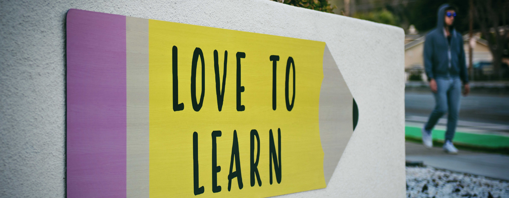

Educacion
- Instituto Tabancura, Santiago, Chile
- Administracion de empresas mencion Marketing, Instituto Inacap, Valparaiso
Colegio
Universidad

He manejado equipos de trabajos y organizado diversas logísticas operacionales en el rubro de tiendas deportivas. Formé una tienda de surf que duró 6 años en el cual forme equipos de trabajo y aprendí sobre redes sociales y marketing digital, luego me fui a trabajar a la distribuidora de artículos de surf más grande del país como “Jefe de Operaciones” donde tuve a cargo las redes sociales y otro equipo de trabajo para luego irme a Australia por un año. Actualmente me encuentro trabajando en Boreal Water, al mismo tiempo haciendo asesorías de Marketing Digital y el último tiempo eh estado perfeccionándome en marketing digital y programación cursando la carrera de Fulls Stack java Script en Desafio Latam.
Colegio
Universidad
09/2019 A LA FECHA
Forme una empresa de marketing digital donde hago asesorías y veo algunas cuentas de marcas en Instagram y Facebook, además de posicionarlas en google y en las distintas plataformas desarrollando estrategias que permitan aumentar las ventas, alcance y interaccion con los prospectos.
11/2021 A LA FECHA
A cargo de vender el servicio y desarrollar el marketing digital, también veo las operación de mantención de las máquinas y reposición de insumos y repuestos para el correcto funcionamiento del servicio en toda la Quinta Región.
04/2017 al 04/2018
Estuve a cargo de manejar las redes sociales de “ Surf House”, además de manejar un equipo de trabajo en ventas, despachos y bodega (reposición a tienda), además del sistema de boletas y facturas, cuentas y ventas en línea (e-commerce).
11/2011 al 04/2017
Emprendí en lo que se convirtió la tienda de surf más grande de la Quinta Región llamada “El Spot surf shop”. Ahí aprendí como hacer importaciones, manejar equipos de trabajo (vendedores y reparadores en el taller y construcción) y manejar todo lo que implica un negocio de este tipo, también aprendí sobre marketing digital y desarrollo de redes sociales y posicionamiento en redes y Google. Además durante un año y medio en paralelo a la tienda desarrolle trabajos en fibra de vidrio para la construcción.